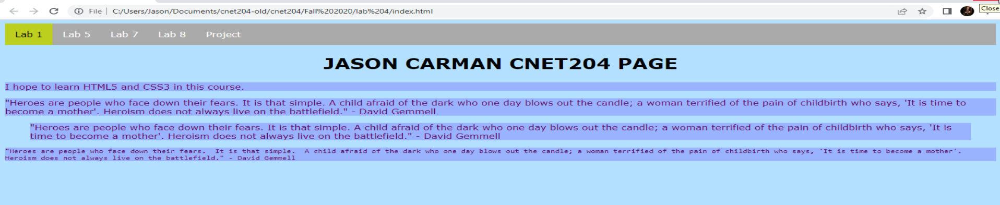

Lab 7 - Navigation Bar
Overview
This week's lab will cover the following:
- Learning how to implement CSS comments
- Learning how to create and use CSS classes & IDs
- Learning how to create a mobile friendly navigation bar
Stylizing our navigation bar with CSS
Open the style sheet (style.css) that you created back in Lab 2. We're going to add some CSS to it, to stylize our navigation bar. Since the code we're adding is strictly for the navigation, it's good to separate it from the rest of our code within a block of comments. This of course means, we need to introduce comments in CSS.
If you recall in html, you're able to enter in a comment with the <!-- --> tags. In CSS, comments begin with /* and close with */. They can also span multiple lines, or be confined to a single line. Either way, the syntax is the same. An example follows for clarity.
CSS Comment
/* This comment spans multiple lines */ /* This comment spans one line */
To do:
Now that we know how comments work, create comments at the bottom of your CSS file. One that says "start navigation" and the other "end navigation". Everything in between these comments will be the CSS for our navigation. This isn't technically required for the code to work, but it does make our code easier to read.
The majority of the magic that makes a navigation bar appear as such is done via CSS. Structurally it's simply a list of links within a special tag designating it as a navigation bar. To do this we use some a slightly more complex CSS selector than we've seen up to this point. It is recommended you apply these attributes individually and refresh the page each time, to understand what each of them are doing.
nav ul {
}
To best describe what the above selector is doing, it is simplest to think of it in a series of spoken or written instructions. Find the navigation tag (nav), within the nav find the unordered list (ul).
The first few attributes you'll want to change are:
- remove the bullets, by setting the attribute list-style-type to none
- set margin and padding to 0 - this will cause the nav to fill the top of the screen
- set the overflow attribute to hidden - this will cause any content that fills more of the elements box than is available (hence overflow) to remain hidden
- apply a background color of your choice
- Optional: apply a border-radius to give the appearance of rounded corners
Note the list still appears as stacked, even with the bullet points removed. We want to display a horizontal navigation bar. To accomplish this we must modify another attribute, and use another selector. This can be done a few different ways, one of the simplest of which is to change the display attribute.
To do:
Using the selector nav ul li, set the float parameter to left.
Setting the anchor tags to display as block
Enter the following code into your CSS following the nav ul li selector, and see what it does.
nav ul li a {
display: block;
color: white;
text-align: center;
padding: 14px 16px;
text-decoration: none;
}
CSS classes and events
Everything we've applied using CSS thus far has been applied to specific tags (reffered to as selectors in CSS). Sometimes it's necessary to apply changes uniquely by using a class or ID (we'll look more at IDs in a future lab). Additionally CSS can be applied when an specific event occurs (like hovering over the tag). Here's a small list of events you can use to apply CSS.
- hover - when the user mouses over the selector
- focus - when the element has focus - used more in forms, we'll look at this in a later lab
- visited - Applies to all visted links
- link - Applies to all unvisted links
For more refference, see w3schools.
Applying what you just learned
You're going to use a very complex selector that will change the background colour when you hover over a link, as long as it's not the active link. Apply a background colour of your choice using the following selector.
nav ul li a:hover:not(.active) {
background-color: #111111;
}
Now we're going to apply some CSS to active links. Apply the following, modifying the colours to something you of your choice.
nav ul li a.active {
background-color: #bcce1e;
color: #000000;
}
Creating a mobile friendly navigation bar
This last bit will make our navigation mobile friendly, as it'll display differently based on the size of the screen. First we're going stylize a class to float right.
nav ul li.right {
float: right;
}
Notice you're using a class we didn't create anywhere in the html. We're going to apply this class in a slightly different way. The following code will apply the above class only when the screen's maximum width is 600px.
@media screen and (max-width: 600px){
nav ul li.right,
nav ul li {float: none;}
}
Save your CSS, refresh your page in the browser and try resizing the browser window to simulate the size of a mobile device. Notice what happens!
Completing the Lab
Tip: Validation! Your page should pass the w3schools validation tool.Upon completion of the lab you should have added a menu that links to the other pages that we're going to create this semester. Your page should look similar to the following output (your choice of colours will likely be different). If it does not, go back and complete whatever you've missed.
Exploration Questions
- What does display: inline-block; do?
- What example of a CSS event did we use in the lab?
- What does float: right; do?
- How do you reference classes and IDs in CSS?